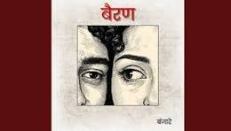

Manne sambh-sambh raakhe
Tere jhanjhara ke jode
Meri gel ro ro ye bhi
Chhori bawle se hore
Manne aaye jaave khyaal tere
Khaaye jaave khyaal tere
Jeen konya deti
Haaye Bairi tanhaai manne
Geeta mein gaai kade
Chaati ke lagaai manne
Jit bhi gaya re
Teri yaad khadi paayi manne
Sambh sambh rakhi bahut
Chaati ke lagaai manne
Jit bhi gaya re
Teri yaad khadi paayi manne
Ho maarya-maarya phire
Dekh haal tu bichare ka
Tere bina jeena bhi
Ke jeena banjaare ka
Khoya rahun yaad teri
Kar ke nadaaniyan
Batuwe mein rakhun teri
Sambh ke nishaaniyan
Tere bina kaal horya
Theek konya haal mera
Haath jodun Ram dede
Saansa te rihaai manne
Geeta mein gaai kade
Chaati ke lagaai manne
Jit bhi gaya re
Teri yaad khadi paayi manne
Sambh sambh rakhi bahut
Chaati ke lagaai re
Jit bhi gaya re
Teri yaad khadi paayi mane
Je tu thodi ghabra jya
Meri yaad tanne aa jya
Tu de diye awaaz re main
Aa jaunga
Todun duniya ki reet
Re ke haar re ke jeet
Manne chahiye teri preet
Main nibha jaunga
Dekh bawla bana gi
Manne likhna sikha gi
Haaye noch-noch khaagi
Teri bairan judaai manne
Geeta mein gaai kade
Chaati ke lagaai manne
Jit bhi gaya re
Teri yaad khadi paayi manne
Sambh-sambh raakhi bahut
Chaati ke lagaai re
Jit bhi gaya re
Teri yaad khadi paayi re
Aaj taai nibhaun jo si
Kasam thi khaai manne
Zindagi saari ya meri
Tere lekhe laai manne